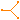

Interfaces and partial models
This package contains interface definitions of the magnetic ports as well as partial models.
Extends from Modelica.Icons.InterfacesPackage (Icon for packages containing interfaces).
| Name | Description |
|---|---|
| Magnetic port of fundamental wave machines | |
| NegativeMagneticPort | Negative magnetic port of fundamental wave machines |
| Positive magnetic port of fundamental wave machines | |
| TwoPortElementary | Two magnetic ports for graphical modeling |
| TwoPortExtended | Two magnetic ports for graphical modeling with additional variables |
| TwoPort | Two magnetic ports for textual modeling |
| StateSelector | Transform instantaneous values to space phasors and select states |
|  PositivePortInterface | Positive port interface to FluxTubes |
| NegativePortInterface | Negative port interface to FluxTubes |
Magnetic port of fundamental wave machines
The potential quantity of the magnetic port is the complex magnetic potential difference  . The corresponding flow quantity is the magnetic flux
. The corresponding flow quantity is the magnetic flux  .
.
PositiveMagneticPort, NegativeMagneticPort
| Name | Description |
|---|---|
| V_m | Complex magnetic potential at the port |
| Phi | Complex magnetic flux into the port |
Negative magnetic port of fundamental wave machines
Negative magnetic port.
MagneticPort, PositiveMagneticPort
Extends from Magnetic.FundamentalWave.Interfaces.MagneticPort (Magnetic port of fundamental wave machines).
| Name | Description |
|---|---|
| V_m | Complex magnetic potential at the port |
| Phi | Complex magnetic flux into the port |
 Modelica.Magnetic.FundamentalWave.Interfaces.PositiveMagneticPort
Modelica.Magnetic.FundamentalWave.Interfaces.PositiveMagneticPortPositive magnetic port of fundamental wave machines
Positive magnetic port.
MagneticPort, NegativeMagneticPort
Extends from Magnetic.FundamentalWave.Interfaces.MagneticPort (Magnetic port of fundamental wave machines).
| Name | Description |
|---|---|
| V_m | Complex magnetic potential at the port |
| Phi | Complex magnetic flux into the port |
Two magnetic ports for graphical modeling
This magnetic two port element consists of a positive and a negative magnetic port and considers the flux balance of the two ports. Additionally the magnetic potential difference (of the positive and the negative port) and the magnetic flux (into the positive magnetic port) are defined. This model is mainly to used to extend from in order build more complex - graphical - models.
PositiveMagneticPort, NegativeMagneticPort, TwoPortExtended TwoPort
| Name | Description |
|---|---|
| port_p | Positive magnetic port of fundamental wave machines |
| port_n | Negative magnetic port of fundamental wave machines |
Two magnetic ports for graphical modeling with additional variables
This magnetic two port element consists of a positive and a negative magnetic port and some additionally variables, but no physical balance equations.
PositiveMagneticPort, NegativeMagneticPort, TwoPort, TwoPortElementary
Extends from TwoPortElementary (Two magnetic ports for graphical modeling).
| Name | Description |
|---|---|
| port_p | Positive magnetic port of fundamental wave machines |
| port_n | Negative magnetic port of fundamental wave machines |
Two magnetic ports for textual modeling
This magnetic two port element only consists of a positive and a negative magnetic port. This model is mainly used to extend from in order build more complex - equation based - models.
PositiveMagneticPort, NegativeMagneticPort, TwoPortElementary, TwoPortExtended
Extends from Magnetic.FundamentalWave.Interfaces.TwoPortExtended (Two magnetic ports for graphical modeling with additional variables).
| Name | Description |
|---|---|
| port_p | Positive magnetic port of fundamental wave machines |
| port_n | Negative magnetic port of fundamental wave machines |
Transform instantaneous values to space phasors and select states
Transforms instantaneous values into space phasors and zero system currents, rotates space phasors and sets stateSelect modifiers in order to choose states w.r.t. rotating frame, i.e., with small derivatives.
| Name | Description |
|---|---|
| m | Number of phases |
| xi[m] | Instantaneous values |
| gamma | Angle of rotation [rad] |
| x0StateSelect | Priority to use zero systems as states |
| xrStateSelect | Priority to use space phasors w.r.t. rotating frame as states |
Positive port interface to FluxTubes
Connects a FundamentalWave port with a real and imaginary part FluxTube port.
| Name | Description |
|---|---|
| port | Magnetic port of fundamental wave machines |
| port_re | Magnetic port, real part |
| port_im | Magnetic port, imaginary part |
Negative port interface to FluxTubes
Connects a FundamentalWave port with a real and imaginary part FluxTube port.
| Name | Description |
|---|---|
| port | Magnetic port of fundamental wave machines |
| port_re | Magnetic port, real part |
| port_im | Magnetic port, imaginary part |